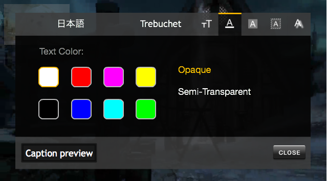

FCC 708 Compliance supported for Closed Captioning (CC) to allow users to style closed caption appearance on the V3 Flash player.
Overview
The Ooyala Flash Player V3 for desktop supports Federal Communications Commission (FCC) 708 compliance for closed captioning through a UI panel with a set of tabbed controls. Closed captions on Ooyala Flash desktop players accommodate FCC regulations, which allows the end user to change how the closed captions appear on the player (for live and VOD), including:-
Multi-language support
-
Font
-
Text size
-
Text color
-
Text shadow
-
Background color
-
Transparency
-
Caption window color
- The default behavior of closed captions in Player V3 is "Off". You can enable closed captions with the JavaScript function setClosedCaptionsLanguage(), described here.
Supported Configurations
The standard Ooyala default player platforms, configurations, and browsers support the FCC compliance UI features as follows:-
The Ooyala’s Flash desktop player supports the FCC 708 compliant closed caption UI controls. As long as a video has closed captions and is using the default Flash player, the updated closed captions feature will work.
-
FCC 708 compliance for closed captions is supported for both VoD and live streaming.
-
Customized Flash desktop players are not directly supported.
For more information about our supported configurations, see Player Requirements.
Storing Closed Caption Settings
With the closed caption panel UI controls, viewers can make changes to closed caption styles on the fly. These changes are stored to the Flash player cache, when the viewer selects close or clicks outside the UI panel. If the viewer refreshes the player, the changes are automatically applied. Closed caption settings remain in place and are shared across Flash players and browsers but only on the same machine.Note: Clearing the Flash player cache may affect the settings. See the Adobe Flash player storage documentation and Flash Player storage help for more information.
Default Styling Properties
- Language
- Text alignment
- Text background color (tts:backgroundColor) Note: Text background only displays by default when it is paired with tts:showBackground="always"
- Text color (tts:color)
- Font size (tts:fontSize)
- Font family (tts:fontFamily)
- Font style (tts:fontStyle)
- Font weight (tts:fontWeight)
- Opacity i.e. applicable to text box background or window background (tts:opacity)
How DFXP Settings Apply
On a browser without any cached settings, when a player and asset are loaded with DFXP settings, all attributes as marked in the list above will be applied with default settings provided in the DFXP file. Once the end user modifies the CC settings through the UI interface, DFXP settings will be overridden for all settings and replaced with player defaults and user preferences. The Flash player defaults are described in the table below.
| DFXP Styling Property | Default Flash Player Setting | Additional Information |
|---|---|---|
| Language | first available | |
| Text alignment | center | Valid values: left | center | right |
| Text background color (tts:background) | none | |
| Text color (tts:color) | white | |
| Font size (tts:fontSize) | 14px | Value should be in px |
| Font family (tts:fontFamily) | sansSerif | Only supports Generic Family Name |
| Font style (tts:fontStyle) | normal | Valid values: normal) | italic) |
| Font weight (tts:fontWeight) | normal | Valid values: normal) | bold) |
| Opacity i.e. applicable to text background or window background (tts:opacity) | 0.7 | Valid values: 0-1. |
User preferences are saved in Flash storage so the settings are available for a user for that specific device until Flash storage is cleared. This is a one time setting that can be saved across any assets played on the Ooyala Flash player.
Setting Closed Caption Styling
For the FCC 708 compliant closed captioning to work in a default Flash desktop player, the provider must have:-
uploaded (in Backlot) a DFXP (now TTML) file for VoD. For information about what this file should contain, see Supported Closed Caption DFXP (now TTML) Format.
-
CuePoints for live streaming. For more information about cue points, see Closed Captioning and Localization.
If the DFXP (now TTML) files are uploaded or CuePoints are inserted during a live stream, all the viewer must do is click the player’s closed caption button. The Closed Caption button will not appear if either the DFXP (now TTML) file or CuePoints are not available for the default player.
The viewer can set closed caption styling in two ways:
- Via FCC styling (click the CC icon > options in the player UI)
- Via the DFXP (VoD) (now TTML).
Pause/Play with Closed Captions
When viewers click on the CC button () in the UI, the video will continue to play. This means that you can turn closed captioning on and off without stopping the video. The video will only pause once you click CC button > Options.
Note: A live video will never pause when you are managing closed captions (even when you click Options ).Turning Closed Captions On/Off
To turn closed captions on, click CC button > On. When you select closed captions On, the player displays your selected closed caption language or it displays the default closed caption language (the first available on the list). The player displays the captions immediately after you click CC button > On.To turn closed captions off, click CC button >Off.
Customizing Closed Captions
Viewers can easily customize the look and feel of closed captions. They can see a preview of how the closed captions will look while setting the style. The default behavior is that when the viewer clicks Options the caption is automatically toggled on. Viewers can select the closed caption options in any order. All changes are applied immediately.
To customize closed captions:- Click Closed Captions.
- Click Options. The customize panel will appear.
Customizing the Closed Caption Language
To customize the language, click the Language tab and select the desired closed caption language. (To look through all available languages, scroll horizontally through the selections by clicking the gray bar on the left of the customize panel.)Note: In the Closed Caption UI panel, the entry for each language selection is localized in its own language. For example, Italian is listed as Italiano.
Closed Caption Language Defaults
The default closed caption language is the first available language in the following order of priority:
- User's language selection.
- Default language from DFXP (now TTML) (if available).
- Default language from player (if available). This can be set in Backlot.
- First language available from DFXP (now TTML) or cuePoint. For example, if the languages are {zh, it, en, es} the first available language is zh.
Customizing the Closed Caption Font
To customize the font, click the font tab and select a font. The tab shows the default Arial font.
Customizing the Closed Caption Text Size and Color
To customize text size, click the tab and select a text size. The default text size is the second text size icon (medium).
To customize text color, click the tab and select a color. Viewers can also select if they want the text color to be opaque or semi-transparent. The default setting is white opaque text.

Customizing the Closed Caption Background Color
To customize the caption background color, click the  tab and select a color and transparency. The default setting is a black
semi-transparent background.
tab and select a color and transparency. The default setting is a black
semi-transparent background.
The following figure shows the change in the Caption preview, when the viewer switches the Text Background Color from Semi-Transparent to Opaque.

Customizing the Closed Caption Window Color
To customize the caption window color, click the  tab and select a color and transparency. The default is a black semi-transparent
window color.
tab and select a color and transparency. The default is a black semi-transparent
window color.
Customizing the Closed Caption Text Shadow
To customize text shadow, click the tab and select a text shadow. The default setting is no shadow. The options that appear include: no shadow, drop shadow, outline, suppressed, and raised.
Storing Closed Caption Changes
To store all of the customizations, click CLOSE at the bottom right of the customize panel or click anywhere outside of the Closed Caption UI panel.